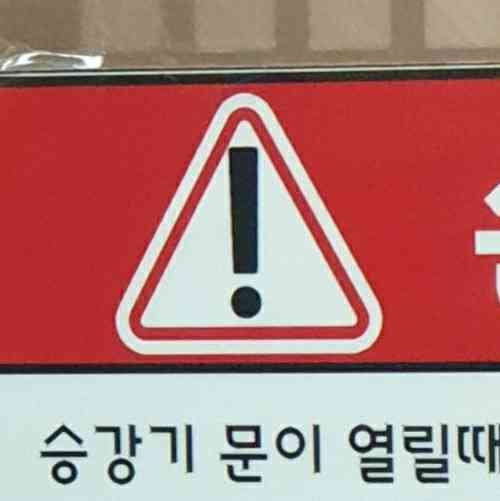
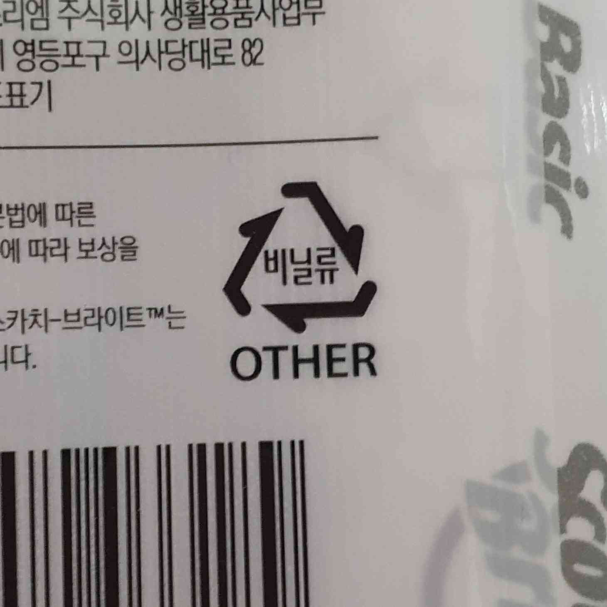
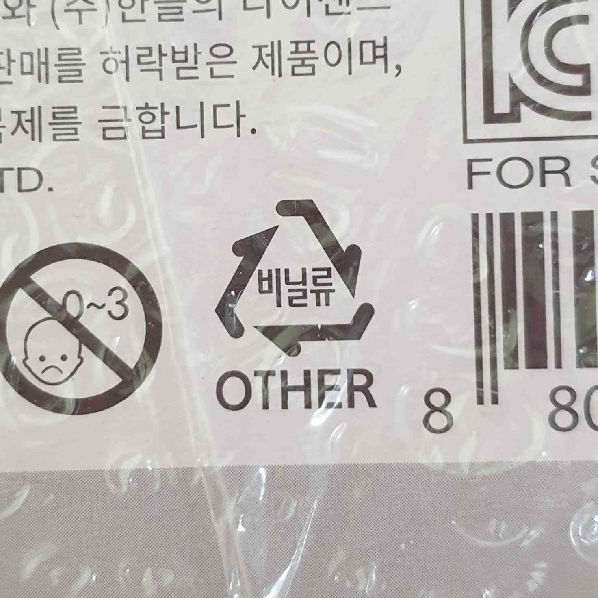
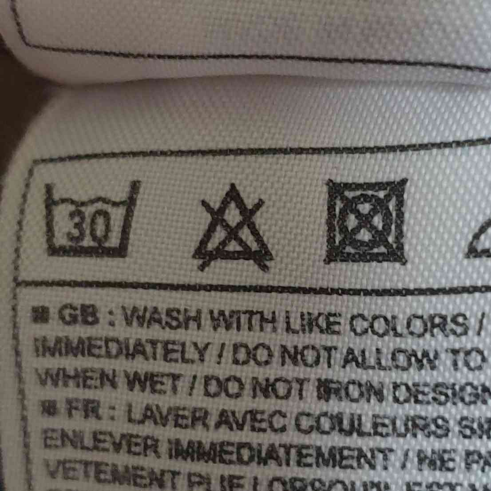
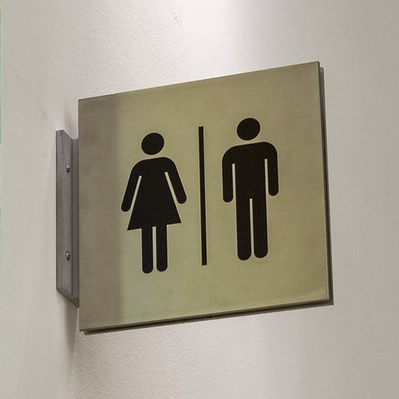
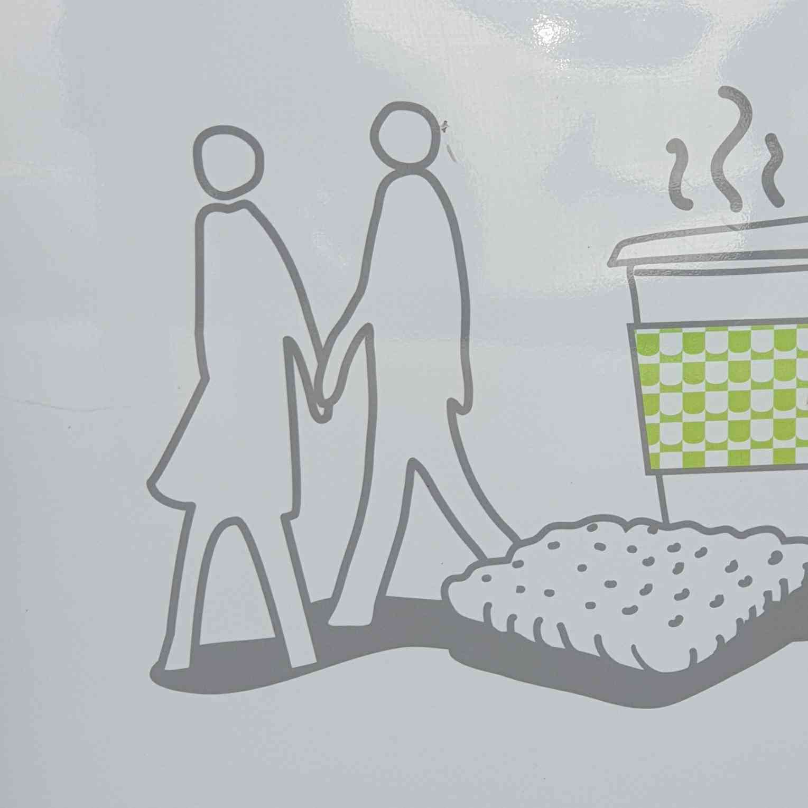
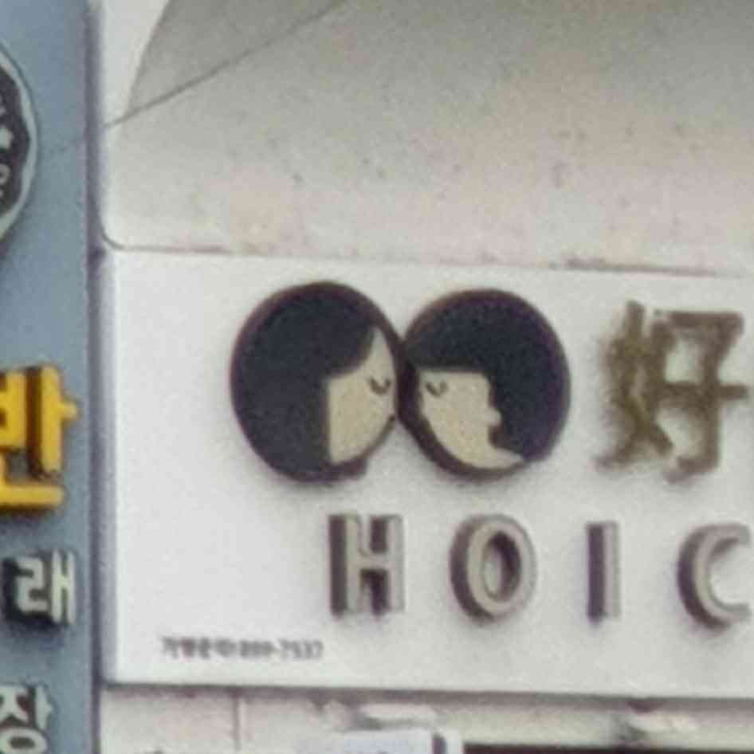

삼각형




주위를 둘러보니 삼각형이 흔한 광경이라는 것을 알았다. 인터넷에 따르면 삼각형은 위치에 따라 두 가지 의미를 갖다. 위쪽을 가리키면 안정성과 힘을 나타내고 아래쪽을 가리키면 불안정했다. 삼각형은 기본적으로 남성적인 모양이지만, 뒤집어지면 여성의 생식을 나타내기도 한다. 영성에서 삼각형은 몸과 마음과 정신의 결합을 나타낸다. 디자인에서는 화살표나 포인터 대신 얇은 삼각형을 사용할 수 있다. 더 작은 삼각형은 서로 맞물리는 구성이나 모자이크 효과가 있는 콜라주의 모양으로 사용될 수 있다. 삼각형이 클수록 눈에 더 잘 띄므로 더 큰 크기로 사용하기 전에 그 의미를 고려해야 한다. 베이스에 편안하게 놓이거나 오른쪽을 향한 점이 있는 삼각형을 사용하여 앞으로 나아가라는 메시지를 전달하는 것이 항상 가장 좋다. 디자인을 눈에 띄게 만드는 도형의 창의적 활용 방법 일상생활에서 흔히 볼 수 있는 기하학적 의미 삼각형.
인간의 아이콘



이것은 흔한 광경이다. 남자의 상징은 일반적인 사람의 모양이고 여자의 모양도 똑같다. 단지 드레스를 입고 있다는 것을 의미하는 삼각형만 있을 뿐이다. 단순한 아이콘뿐만 아니라 더 복잡한 아이콘도 있다.